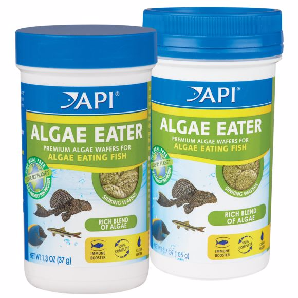
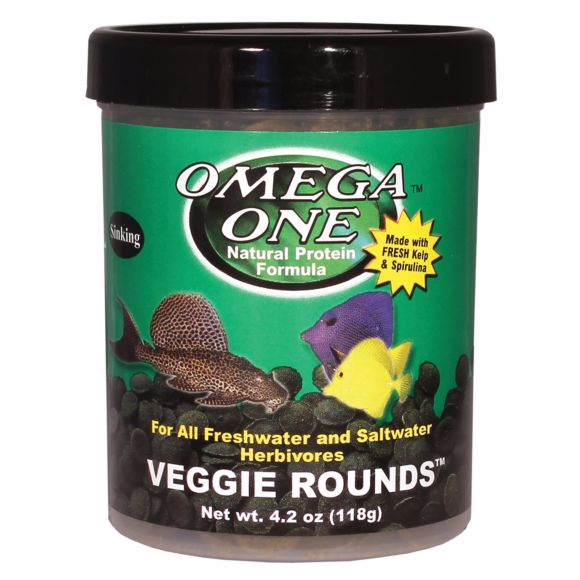
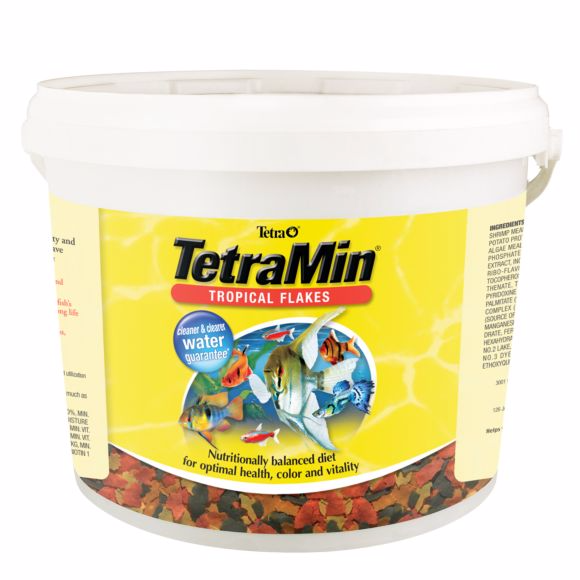
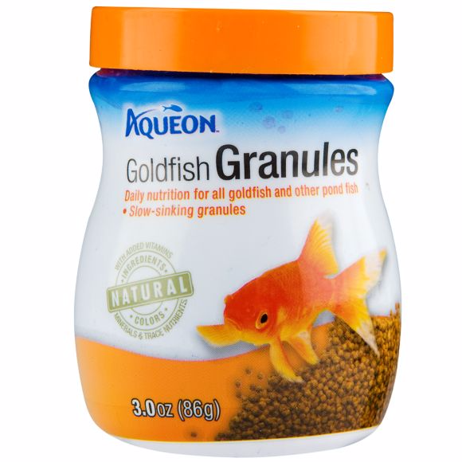
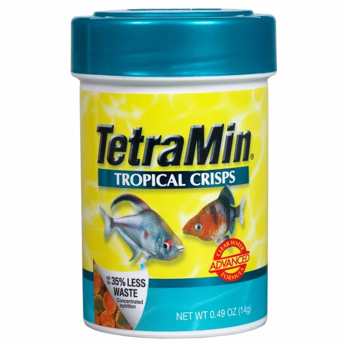
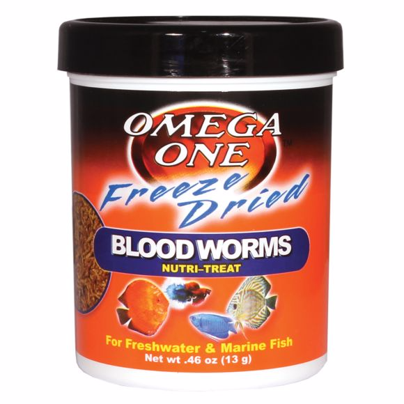
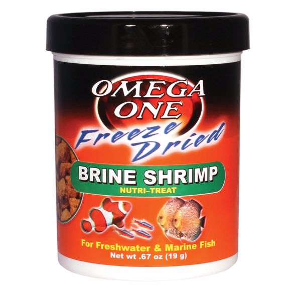

In the wild, fish often have very specific diets. Fortunately, most species will do very well without the exact food items they would select in nature. Generally, it is important only to know if the fish you keep are herbivorous (eating plants), carnivorous (eating animals), or omnivorous (eating both). There are an enormous number of commercially prepared foods that can be used in your fishes’ diets, and most of the choice is up to your preference and convenience.
Although some frozen and freeze-dried products are formulations or mixtures of ingredients, the majority of them are processed food organisms such as blackworms or brine shrimp. Some people argue that freeze-drying conserves more vitamins than freezing, since the cells in the frozen animals burst, releasing some of the nutrition, but freeze-drying obviously results in some nutrition loss, too. The usual advice to feed a variety of foods will make up for deficiencies in any one of them.
Freeze-dried foods are much more convenient, but frozen versions sometimes seem to have more fish appeal. One nice thing about freeze-dried foods is that you can easily crumble them for smaller fish. Brine shrimp, daphnia, blackworms, tubifex, and krill are among the commonly available freeze-dried choices.
While you can store freeze-dried products on the shelf, frozen foods obviously must be kept frozen until ready to use. Never use foods that have thawed and refrozen, as they can kill your fish. You do not have to thaw the food to use it; just break off a small piece and float it in your tank. The fish will greedily pick it apart as it thaws in the warm water.
In the early days of the hobby, live foods were the only choice to provide fish with the nutrients they need. Fortunately this is no longer true. While a few diehards still feed only live food, most hobbyists take advantage of the excellent quality and variety of commercial foods, which are actually superior to live foods in many cases.
All fish, however, greatly enjoy live foods as a treat, whether they are chasing daphnia around the tank or munching down on a juicy stalk of anacharis. Many live foods, like white worms and microworms, can be cultured easily at home.
There are a very few fish that will not survive without live foods, and a few more that will not spawn unless they are fed live foods, but none of these are popular species common in the hobby. There are, however, quite a few species in which wild-caught individuals may not recognize nonliving items as food. It is a fairly simple task in most cases to wean such fishes to prepared foods.
Sometimes just feeding pieces mixed with the living organisms will do the trick. You can also condition large predators to strike at worms or crickets that you throw on the surface until they will strike at anything, including pellets or sticks. For stubborn cases you can use a string or feeding tongs (see “Feeding Accessories”) to wiggle food in front of the fish until it learns to take anything you offer, whether it is moving or not.
Piscivorous predators often present the greatest challenge, but in most cases you can train them to take nonliving food items with a little patience. Even wild-caught fish learn quickly who brings supper, and they are likely to strike at anything you offer after a little training. Prepared food items are nutritionally superior to common “feeder fish,” which are poor choices.
Remember also that if you are feeding live fish to marine predators you must offer marine fish, not goldfish, guppies, or other freshwater species, which are not nutritionally suitable.
Don’t think you can get away with feeding reef inverts the same things as your fish! Individual reef-tank inhabitants will likely have specialized feeding needs, as well as the requirement of supplemental nutrients—the kinds found in natural reef habitats.
In addition to the strict maintenance of temperature, pH, and salinity, many inverts like clams and stony corals must have calcium and other minerals or trace elements added so that they may continue to grow and remain healthy. And while some organisms may rely upon the zooxanthellae embedded in their tissues to produce energy from strong lighting, a great deal of such creatures require supplemental feedings of plankton or meaty foods—or they may at least benefit from such feedings, in addition to the nutrition obtained from their symbionts. Be sure you’re feeding at the right time of day as well, as some corals only extend their feeding tentacles at night.
Some of the specialized foods you’ll find are sold in bottles, and can be diluted in a volume of tank water and dispersed in the aquarium, or directly target-fed to different specimens. These may be liquid mixes of plankton, phytoplankton, zooplankton, or other tiny foods suited to different animals. These are categorized by their size in microns, as one may be limited in this area as to what can be taken in by the tiny orifices of some corals. For example, small-polyp stony corals will likely need smaller food than a large-polyp stony coral or an anemone.
Be sure to follow the directions on these closely, as fresh ingredients cannot be expected to last past their expiration dates, and some also require refrigeration after being opened. It is also a good idea to keep any feeding devices out of the bottle; pour the contents into a separate container before using a dropper or squirter.
Many available frozen or refrigerated foods are also good for reef invertebrates, provided they are of the proper nutritional profile and the correct size. While brine shrimp may work for some, you’ll find that they’re far too large for other creatures. A mix of cyclops, rotifers, oyster eggs, or other suitable saltwater foods might work, depending on the size of the foods. You might find that a mixture of these tiny foods in conjunction with a small quantity of a tiny frozen food, like cyclops, will suit a variety of inverts well.
Many additives are considered for the general well-being of our fishes, but many invertebrates simply cannot survive and grow without supplemental nutrients, especially calcium. Many of these are included in salt mixes, but they are depleted between water changes; any creature with a calcareous skeleton will use these up, as they’re needed for building upon their pre-existing skeletons.
These additives can be added manually, or with specialized dosing equipment—but they’ll generally contain calcium, magnesium, strontium, potassium, iodine, iron, and other trace elements. While the complete nutritional needs of a healthy reef are constantly investigated, we should try to offer at least what we know is needed.
Automatic feeders work off a timer and are most commonly used to feed fish while the aquarist is on vacation; they can make things easier all the time or feed fish while you are away at work. They either have a series of hoppers that rotate over a chute to drop their contents into the tank or a single large hopper that dispenses a set amount of food at preset intervals. Dry and freeze-dried foods can be used with most models.
Feeding rings are plastic rings that are used to keep floating foods in one spot. This cuts down on mess, but unless all the fish in the tank are peaceful and feed well together, it is better to let the food spread over the whole surface. Some models float freely, while others attach to the glass with a suction cup. Worm feeders are usually often cone-shaped. The cone is full of holes, and live tubifex or blackworms are placed within. The worms slither through the holes, and in some cases are actively sucked through by impatient fish.
Feeding tongs or skewers serve several purposes. They enable you to handfeed fish without putting your hands into either the water or harm’s way from the sharp teeth of large specimens. You can also ensure that each fish gets its fair share. These aids are very important in training specimens of predatory species that do not recognize nonliving items as food. A strip of meat or a food stick can be waved or wiggled in front of the animal to mimic live prey.
Lettuce clips are spring-loaded plastic clips that attach to the glass with a suction cup to hold vegetables so herbivorous fish can graze on them. Marine hobbyists often use them with sheets of dried seaweed like nori. Romaine lettuce, zucchini slices, and other veggies can all be clipped.
Target feeders are often designed like a large medicine dropper, sometimes with a skewer on the end for attaching pieces of meaty foods for fish or invertebrates (like anemones) that will accept them. A bulb on the dry end allows liquid-based foods to be sucked up into a tube, so they can be administered to slower fish or sessile invertebrates. These are particularly useful for the feeding of foods like phytoplankton to corals, clams, and other such invertebrates. An added benefit is that such tools allow the user to keep his or her hands out of the water as much as possible, as some creatures requiring target feeding must be fed twice daily or more—this is especially true of longer feeding devices that remain partially out of the water, allowing the aquarist to stay dry. When resisting the temptation to place one’s hands into a tank, the risk of potentially contaminating the water with soaps, perfumes, or other chemicals is drastically reduced—and this is something all aquatic life will benefit from.
Plecos, African cichlids, pacus and silver dollars are all fish who eat vegetarian. They do well on a staple of flake food, but also like nibbling algae wafers. For a fresh option, you can supplement your fish's diet with lettuce, spinach, zucchini and green peas chopped into fish-sized bites.
Algae Eater
API Algae Eater Premum Algae Wafers are specially formulated for your algae eater's optimal health. This food contains pea protein to support digestibility and growth, and is formulated with a rich blend of algae, including spirulina, to provide essential micronutrients. Natural prebiotics promote beneficial gut bacteria and build natural defenses. (more)
Veggie Rounds
With freshly harvested kelp and spirulina. With freshly harvested kelp and spirulina. OmegaSea, makers of Omega One, is one of two companies in Alaska with permits to harvest fresh kelp along the rugged shoreline of Southeast Alaska. Loaded with essential minerals and nutrients, this this spirulina-rich food is excellent for plecos and other herbivorous fish. (more)
Most aquarium fish are omnivores: you can feed them meat or plants, or both. These species — including goldfish, mollies and catfish— also like eating flake food. If you have goldfish, look for a food formula made just for them.
Tropical Pellets
Tetra TetraMin Tropical Flakes offer complete and balanced diet for all common tropical fish. This flaked fish food features a highly digestible "Rich Mix" formula that promotes energy, and includes high amounts of Vitamin C to promote the outstanding health and vibrancy of your tropical fish. (more)
Goldfish Granules
Aqueon Goldfish Granules provide balanced nutrition for daily feeding of goldfish and other ornamental pond fish. Available in flake and granular formulas, this daily diet contains natural ingredients and colors with added vitamins, minerals and trace nutrients. Contains premium ingredients that attract fish, support a healthy immune system, enhance color and provide essentials for healthy growth and vitality. Specially formulated so that fish utilize more of what they eat, creating less waste. (more)
Tropical Crisps
TetraMin Tropical Crisps offer complete nutrition for your fish. This highly digestible formula contains high levels of carotenoids, krill, and spirulina algae to aide with color enhancing, muscle growth, and ease of digestibility. Up to 35% less waste than competing flakes means more usable food, clearer water, and healthy fish. (more)
Only a few species of fish eat mostly meat. Jack Dempsey cichlids and bettas like worms (live or freeze-dried) and frozen brine shrimp. Oscars enjoy the hunt, living on live feeder fish.
Bloodworms
Omega One Freeze Dried Betta treat Bloodworms are a natural treat for freshwater and marine fish. These bloodworms are rich in vitamins and minerals, and are as nutritious as live food without the risk of bacteria or parasites (more)
Brine Shrimp
A natural treat that's rich in vitamins and minerals. As nutritious as live food without the risk of bacteria or parasites. High in natural protein for healthy growth. Natural pigments for strong color enhancement. Excellent appetite enhancement for finicky eaters. For freshwater and marine fish. (more)
We know that all things in this universe have certain level of energy associated with them. If we locate everything at correct place then the energy they dissipate is harmonious for us. The same logic also applies to fish aquariums in vastu shastra.
When placed and used correctly, a fish aquarium becomes master-key for success and harmony, but if used incorrectly the same fish aquarium becomes happiness ruining element.